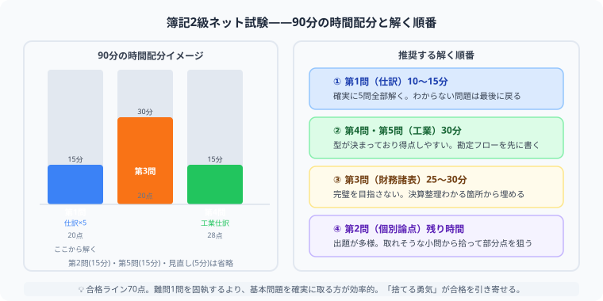

日商簿記2級 | 公開：2026年5月9日 | 更新：2026年6月30日
【日商簿記2級】ネット試験の問題構成・時間配分を完全解説
90分で合格する解く順番とは？
著者：大谷 一輝（関西の大学3回生・日商簿記1級勉強中）
大
著者・大谷からひとこと
僕がネット試験を初めて受けたとき、一番焦ったのは「問題が画面から消えない」ことでした。紙なら余白に書き込みながら解けるのに、画面だと問題と解答欄の間を視線が何度も行き来してパニックになるんです。しかも渡される白紙は1〜2枚しかなくて、「あれ、どこに何を計算したっけ？」と迷って盛大にタイムロスしました。
この記事では、その体験から編み出した「白紙ハック術」と、90分で70点をもぎ取るための解く順番を完全解説します。ネット試験を初めて受ける方は、ここを読んでから本番に臨んでください。
先に結論：おすすめの解答順は「第4問（工業簿記仕訳）→ 第1問 → 第5問 → 第2問 → 第3問」です。頭がフレッシュな最初に第4問でボーナス点を確保し、その勢いで商業簿記に向かうのが最短ルートです。
問題構成の目安

図：90分の時間配分グラフと推奨解答順（第4問→第1問→第5問→第2問→第3問）
| 問題 | 内容 | 配点目安 | 特徴 |
|---|
| 第1問 | 商業簿記の仕訳 | 20点 | 5問×独立。1問で詰まらない |
| 第2問 | 個別論点・補助簿など | 20点 | 出題パターンが読みにくい |
| 第3問 | 決算整理・財務諸表 | 28点前後 | 最重量。部分点を積む |
| 第4問 | 工業簿記の仕訳（5問） | 20点 | 勘定科目が少なく解きやすい |
| 第5問 | 原価計算・CVPなど | 12点前後 | 型（テンプレ）で解く |
時間配分
| 解く順 | 問題 | 目安時間 | 目標 |
|---|
| 1番目 | 第4問 | 5〜8分 | 満点（20点）を狙う |
| 2番目 | 第1問 | 10〜12分 | 4〜5問を確実に取る |
| 3番目 | 第5問 | 15〜18分 | 型で解き、部分点を積む |
| 4番目 | 第2問 | 10〜12分 | 解ける設問だけ拾う |
| 5番目 | 第3問 | 28〜32分 | わかる整理仕訳から埋める |
| 最後 | 見直し | 5分 | 桁ミス・科目ミスを修正 |
解く順番
ネット試験では「どの順番で解くか」を事前に決めておかないと、途中で焦って順番を変えてしまいタイムロスが生まれます。僕がおすすめする解答順は以下の5ステップです。
第4問から始める【約5〜8分・満点狙いのボーナスステージ】
これが最大のポイントです。第4問は工業簿記の仕訳5問で構成されることが多く、商業簿記の仕訳に比べて勘定科目の選択肢が圧倒的に少ないという特徴があります。材料・労務費・製造間接費・製品・仕掛品……と登場人物が決まっているので、頭がフレッシュな試験開始直後の5〜8分で20点満点を狙えます。ここで「よし、取れた！」という手応えを得てから商業簿記に進むと、精神的に余裕が生まれます。
第1問（商業簿記の仕訳）【約10〜12分・4〜5問を確実に】
5問×4点の計20点。仕訳問題は1問ごとに独立しているため、「この1問がわからない……」と10分固執するのが最悪のパターンです。10秒考えてわからなければ即スキップ、わかる問題を先に解答してから戻る習慣をつけてください。
第5問（原価計算・CVPなど）【約15〜18分・型で解く】
総合原価計算・標準原価計算・CVP分析のどれかが出るパターンがほとんどです。事前に「型（テンプレート）」を頭に入れておけば、問題文を読んでいる時点で解法が浮かびます。全問正解より部分点を積み重ねる意識で進みましょう。
第2問（個別論点・補助簿など）【約10〜12分・取れる設問だけ拾う】
出題パターンが読みにくく、難化したときは時間がいくらあっても足りません。全問正解を狙わず、「この設問なら解ける」という部分だけ拾う割り切りが大切です。深入りは禁物。
第3問（決算整理・財務諸表）【約28〜32分・部分点を死守】
最も配点が高く（28点前後）、最も時間がかかるのがここです。すべての修正事項を完璧に処理しようとすると確実に時間切れになります。「この整理仕訳はわかる！」という項目から先に埋めていき、最後まで書き切ることを最優先にしてください。空白のままにしておくより、自信がなくても数字を入れた方が得点につながります。
💡 見直し時間（5分）は必ず確保する：桁ミス（1,200,000円と120,000円の入れ違い）はネット試験の最大の失点源です。最後の5分で全問の金額を見直すだけで1〜2問分の得点が変わることがあります。時計を常に意識して第3問に入りましょう。
ネット試験で注意すること
紙の試験と最も大きく違うのは「問題用紙に書き込めない」という1点です。この事実を舐めると本番でパニックになります。以下の3つの罠を事前に理解しておきましょう。
⚠ 罠①：視線移動パニック
紙の試験なら問題用紙の余白に仮の答えや計算式を書きながら解けます。しかしネット試験では「画面上の問題を見る → 手元の白紙で計算する → 画面に目を戻して入力する」という視線の往復が常に発生します。慣れていないと「あれ、今どこの計算をしていたっけ？」という迷子状態になり、同じ計算を何度もやり直すことになります。
⚠ 罠②：白紙は1〜2枚しかもらえない
試験会場から渡されるメモ用紙は多くて2枚程度です。無計画に使い始めると計算がぐちゃぐちゃになり、「この数字どこの集計値だっけ？」を探すだけでタイムロスが生まれます。
⚠ 罠③：電卓のメモリを使わないともったいない
普段の練習でメモリ機能（M+・MR）を使っていないと、本番で「計算した数字をいちいち紙に書いてから次の計算へ」という非効率な動きになります。M+で小計を積み上げてMRで呼び出すだけで、白紙の消費量が激減します。
✅ 対策：試験開始直後の「白紙ハック術」で視線迷子を防ぐ
試験が始まったらすぐ問題を解き始めるのではなく、最初の1〜2分を使って白紙に「解答欄と同じ形のハコ」を手書きするのが最も効果的な対策です。
たとえば第3問の財務諸表なら、損益計算書と貸借対照表の外枠をざっくり書いておきます。そうすることで「この資料の数字はここの欄に入れる」という対応関係が目に見えるようになり、画面と手元を往復するたびに迷子になるのを防げます。
また、白紙の上端に「第1問」「第3問」「第5問」とラベルを書いてエリアを分けておくと、どの計算がどこにあるかをすぐに見つけられます。たったこれだけで集中力の消耗が大幅に減ります。
- 電卓のメモリ機能（M+・MR・MC）を本番前に練習しておく
- 公式のネット試験サンプル問題で画面操作に慣れておく
- 入力後の金額は必ず一度画面から目を離し、見直しで確認する
- わからない問題に10分以上固執しない（戻ってこられる）
合格戦略：簿記2級は満点を取る試験ではありません。70点（100点満点）を超えることがゴールです。難問を捨てて基本論点を確実に取り切る判断こそが、合格を引き寄せる最大の戦略です。
まとめ
- 解く順番は「第4問 → 第1問 → 第5問 → 第2問 → 第3問」で固定する
- 第4問は勘定科目が少なく、開始直後の5分で満点を狙えるボーナスステージ
- 試験開始の1〜2分で白紙に解答欄の「ハコ」を書く白紙ハック術を実践する
- 電卓のメモリ機能（M+・MR）を活用して白紙の計算量を減らす
- 第3問は「完璧に埋める」より「最後まで書き切る」を優先する
- 最後の5分を見直し（桁ミスチェック）に必ず使う
⚔ 本番の時間配分を学習記録で鍛える
スタディクエストで演習の時間を記録しながら、解く順番を身体に染み込ませましょう。
無料で学習記録を始める →
簿記の実力は、問題を1つ解くたびに確実に積み上がっていきます。
この記事が少しでも参考になったら、この下にある【いいねボタン】をポチッと押してもらえると、めちゃくちゃ嬉しいです！ そして、Study Questで今日の学習時間を記録して、合格までの成長を「見える化」していきましょう。